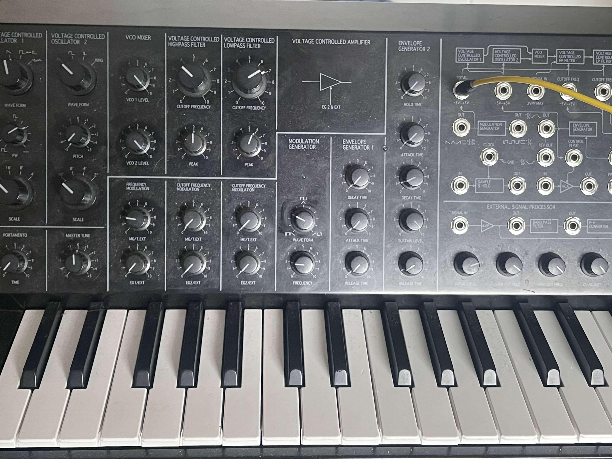
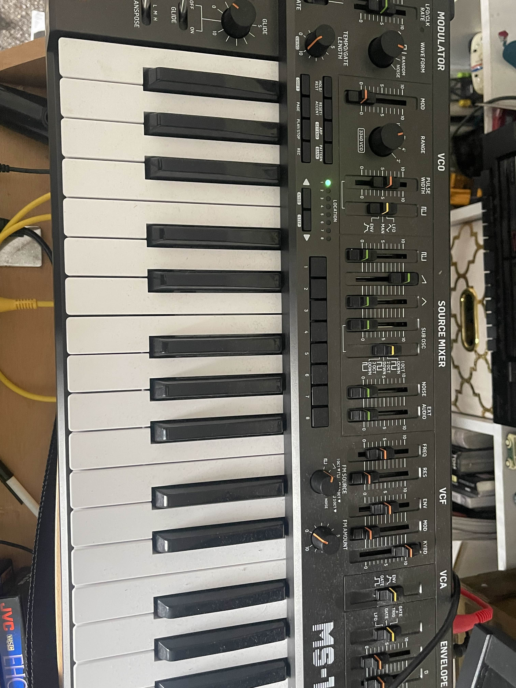

Synthesizers!

Here Is my KORG MS-20 mini, which I have used on all of my tracks and alot that havent been released. This synthesizer is one of the most famous, being used by the likes of THe Human League, Depeche Mode, Daft-Punk.
While it is monophonic, it features two oscillators,HPF and LPF and is semi modular with the MS-50 being KORGs only fully modular synthesizer.
After sometime, the MS-20 was re-released with a diffrent filter design meaning that its original sound was further enhanced, personally I prefer the older filter design however both are still very flexible.
Some things have changed since I last talked about synthesizers on here, I now have a good inventory of synths as well as drum machines, analog fx, interfaces, custom built synths and other things.

Here is my Behringer MS-1 (Roland SH-101 clone, not made of money am I ?) This is a brilliant synthesizer and really did make the first album possible. Without this and the RD-6 I wouldnt have bothered with music again really. Glad I did. Very good performer, sounds great patched so the waveform on the LFO is random and set it to manipulate the octave, then just set the filter mod and keyboard to max and take the filter most the way down with plenty of resonance. You will hear this in the next album